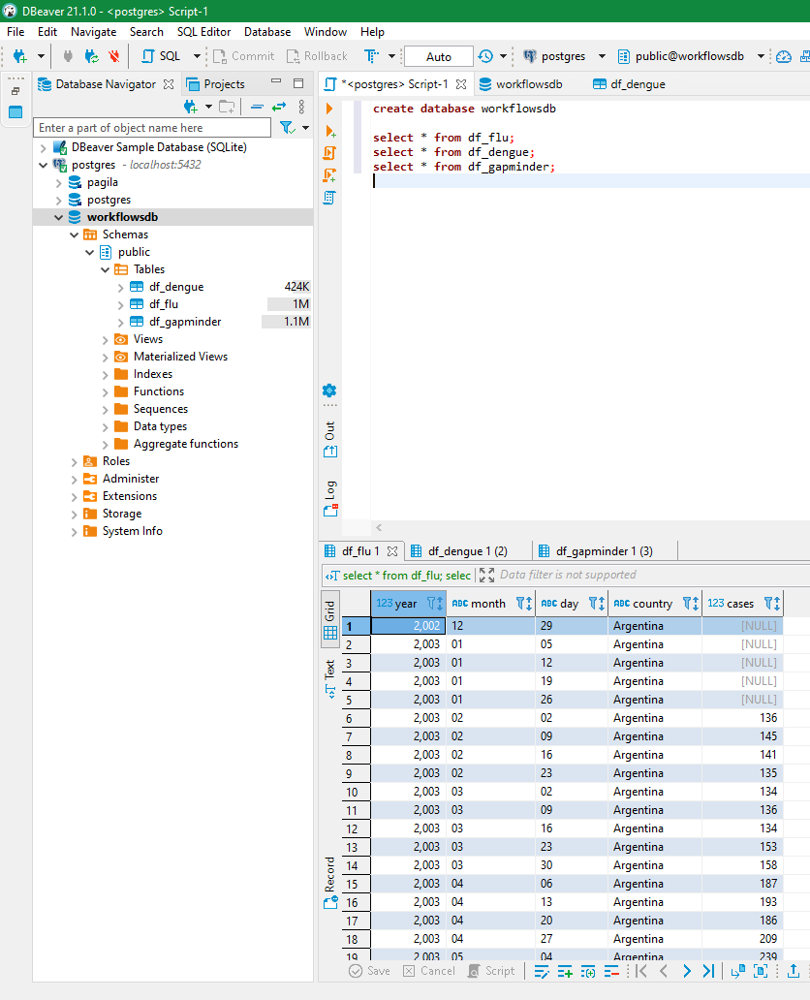
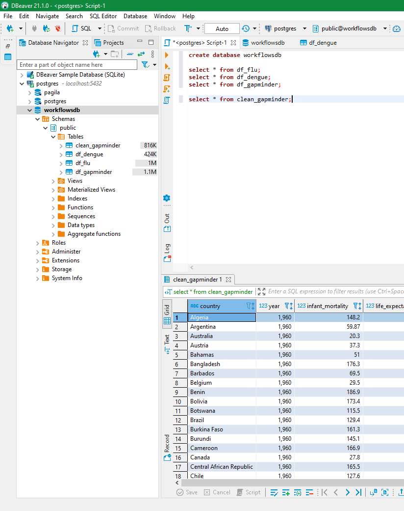
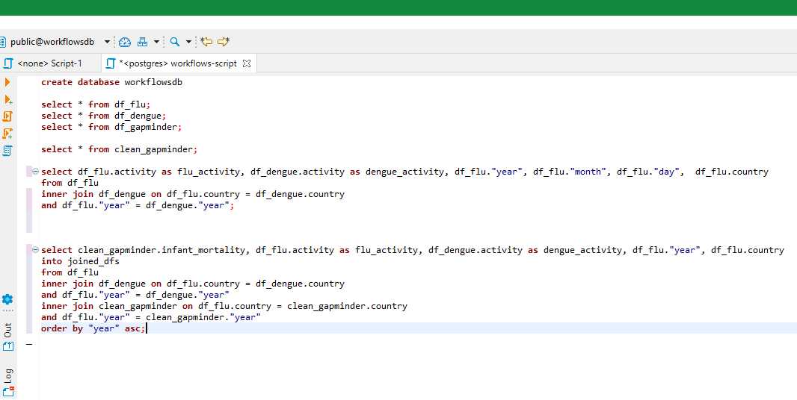
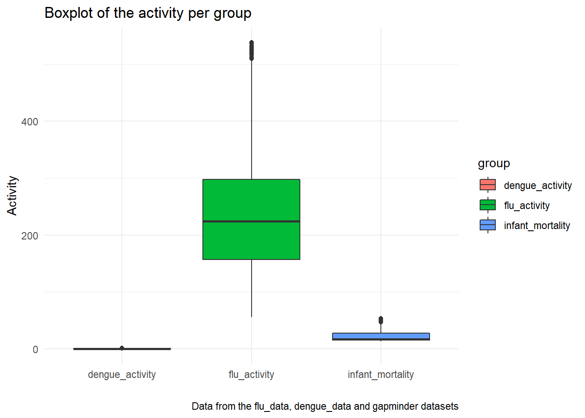
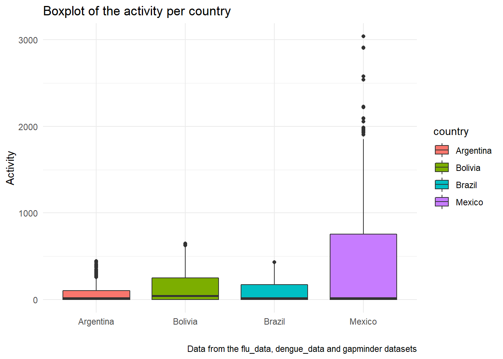
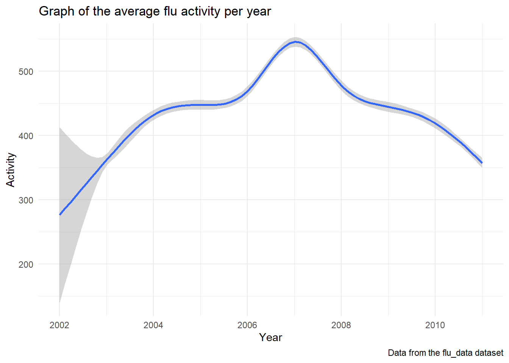

8 Working with databases
This exercise shows my work with SQL and PostgreSQL in DBeaver, and the relation from and to R in Rstudio.
Starting with some setup and loading and tidying of data in Rstudio.
library(tidyverse) #version 1.3.1
library(dslabs) #version 0.7.4
library(RPostgres) #version 1.3.2df_flu <- read.csv("data/flu_data.csv", skip = 11)
df_dengue <- read.csv("data/dengue_data.csv", skip = 11)
df_gapminder <- gapminderdf_flu <- df_flu %>% gather(key = "country", value = "activity", -Date)
df_dengue <- df_dengue %>% gather(key = "country", value = "activity", -Date)Making sure the datasets coincide on variables, so they may be used together.
df_flu <- separate(df_flu, Date, into = c("year", "month", "day"), sep = '-')
df_flu$year <- as.integer(df_flu$year)
df_flu$country <- as.factor(df_flu$country)
df_dengue <- separate(df_dengue, Date, into = c("year", "month", "day"), sep = '-')
df_dengue$year <- as.integer(df_dengue$year)
df_dengue$country <- as.factor(df_dengue$country)And storing them for safe-keeping!
write_csv(df_flu, here::here("data\\df_flu.csv"))
write_rds(df_flu, here::here("data\\df_flu.rds"))
write_csv(df_dengue, here::here("data\\df_dengue.csv"))
write_rds(df_dengue, here::here("data\\df_dengue.rds"))
write_csv(df_gapminder, here::here("data\\gapminder.csv"))
write_rds(df_gapminder, here::here("data\\df_gapminder.rds"))Then inserting them into a premade PostgreSQL database in DBeaver.
# con <- dbConnect(RPostgres::Postgres(),
# dbname = "workflowsdb",
# host = "localhost",
# port = "5432",
# user = "postgres",
# password = "password")
# dbWriteTable(con, "df_flu", df_flu)
# dbWriteTable(con, "df_dengue", df_dengue)
# dbWriteTable(con, "df_gapminder", df_gapminder)
# dbDisconnect(con)And inspecting the data to see if the transfer went properly.
# in dbeaver
knitr::include_graphics(
here::here(
"images",
"dbeaver_screenshot.png"
)
)
# in Rstudio
head(df_flu)## year month day country activity
## 1 2002 12 29 Argentina NA
## 2 2003 01 05 Argentina NA
## 3 2003 01 12 Argentina NA
## 4 2003 01 19 Argentina NA
## 5 2003 01 26 Argentina NA
## 6 2003 02 02 Argentina 136head(df_dengue)## year month day country activity
## 1 2002 12 29 Argentina NA
## 2 2003 01 05 Argentina NA
## 3 2003 01 12 Argentina NA
## 4 2003 01 19 Argentina NA
## 5 2003 01 26 Argentina NA
## 6 2003 02 02 Argentina NAhead(df_gapminder)## country year infant_mortality life_expectancy
## 1 Albania 1960 115.40 62.87
## 2 Algeria 1960 148.20 47.50
## 3 Angola 1960 208.00 35.98
## 4 Antigua and Barbuda 1960 NA 62.97
## 5 Argentina 1960 59.87 65.39
## 6 Armenia 1960 NA 66.86
## fertility population gdp continent region
## 1 6.19 1636054 NA Europe Southern Europe
## 2 7.65 11124892 13828152297 Africa Northern Africa
## 3 7.32 5270844 NA Africa Middle Africa
## 4 4.43 54681 NA Americas Caribbean
## 5 3.11 20619075 108322326649 Americas South America
## 6 4.55 1867396 NA Asia Western AsiaThe gapminder dataset needed some cleaning and ofcourse this new, clean dataset needed to be put in the database as well.
clean_gapminder <- df_gapminder %>% na.omit()
# con <- dbConnect(RPostgres::Postgres(),
# dbname = "workflowsdb",
# host = "localhost",
# port = "5432",
# user = "postgres",
# password = "password")
# dbWriteTable(con, "clean_gapminder", clean_gapminder)
# dbDisconnect(con)
knitr::include_graphics(
here::here(
"images",
"db_screenshot2.png"
)
)
Then joining them using SQL and putting the joined dataset back in Rstudio to show some desciptive statistics and graphs.
knitr::include_graphics(here::here(
"images",
"db_screenshot3.png"
))
joined_dfs <- read.csv("data/joined_dfs_202106171226.csv")
summary(joined_dfs)## infant_mortality flu_activity dengue_activity
## Min. :12.70 Min. : 56.0 Min. :0.0040
## 1st Qu.:14.80 1st Qu.: 178.0 1st Qu.:0.0270
## Median :16.60 Median : 268.0 Median :0.0560
## Mean :22.65 Mean : 441.6 Mean :0.0982
## 3rd Qu.:27.05 3rd Qu.: 539.0 3rd Qu.:0.1080
## Max. :53.70 Max. :3041.0 Max. :1.0000
## NA's :2551 NA's :366
## year country
## Min. :2002 Length:97768
## 1st Qu.:2005 Class :character
## Median :2007 Mode :character
## Mean :2007
## 3rd Qu.:2009
## Max. :2011
## tidy_dfs <- joined_dfs %>% gather('infant_mortality', 'flu_activity', 'dengue_activity', key = "group", value = "activity", na.rm = TRUE)
tidy_dfs %>% filter(activity <= 540) %>% ggplot(aes(x = group, y = activity)) +
geom_boxplot(aes(fill = group)) +
labs(title = "Boxplot of the activity per group",
x = "",
y = "Activity",
caption = "Data from the flu_data, dengue_data and gapminder datasets") +
theme_minimal()
tidy_dfs %>% ggplot(aes(x = country, y = activity)) +
geom_boxplot(aes(fill = country)) +
labs(title = "Boxplot of the activity per country",
x = "",
y = "Activity",
caption = "Data from the flu_data, dengue_data and gapminder datasets") +
theme_minimal()
tidy_dfs %>% filter(group == "flu_activity") %>% ggplot(aes(x = year, y = activity)) +
geom_smooth() +
labs(title = "Graph of the average flu activity per year",
x = "Year",
y = "Activity",
caption = "Data from the flu_data dataset") +
theme_minimal()